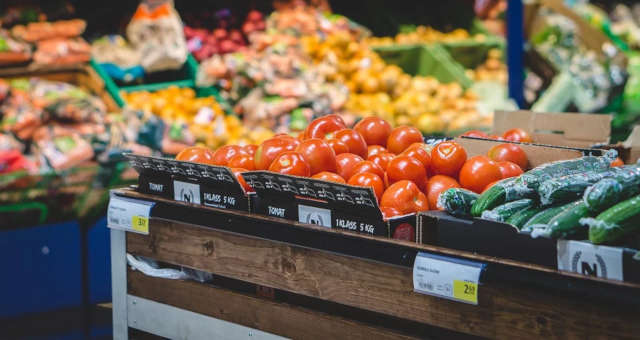

<section class="abastecimento">
    <div class="abastecimento-div">
        <h2 class="abastecimento-título">ABASTECIMENTO DE ALIMENTOS</h2>
        <p class="abastecimento-texto1">O campo desempenha um papel crucial no abastecimento de alimentos ao sustentar a produção agrícola, que é a base da nossa segurança alimentar global. Esses espaços rurais não apenas oferecem o ambiente necessário para o cultivo de uma vasta gama de culturas e criação de animais, mas também representam o elo vital entre a natureza e a mesa do consumidor. Além de fornecer alimentos frescos e saudáveis, os campos apoiam economias locais, promovem a biodiversidade e desempenham um papel fundamental na preservação dos recursos naturais essenciais para as gerações futuras.</p>
    </div>
    
</section>